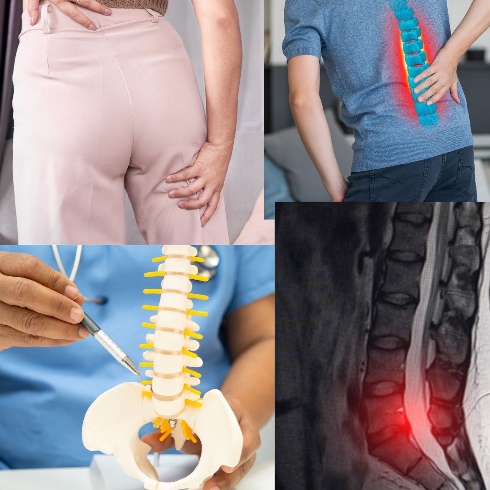

Une douleur qui descend dans la jambe ? La sciatique expliquée : symptômes, causes et traitement
La sciatique est une douleur qui part du bas du dos ou de la fesse et descend dans une jambe. Elle est fréquente, elle n'est généralement pas dangereuse, et la plupart des personnes guérissent en quelques semaines sans chirurgie.
Qu'est-ce que la sciatique ?
Le nerf sciatique est le plus long nerf du corps. Il naît dans le bas du dos, traverse la fesse et descend à l'arrière de chaque jambe jusqu'au pied. La sciatique n'est pas une maladie en soi. C'est le nom donné à la douleur provoquée par l'irritation ou la compression de ce nerf ou de ses racines dans la colonne vertébrale.
Ses caractéristiques habituelles :
- Une douleur qui commence dans le bas du dos ou la fesse et irradie à l'arrière ou sur le côté d'une jambe, parfois jusqu'au pied.
- Une sensation de brûlure, de décharge électrique ou de coup de poignard, souvent différente d'une courbature musculaire ordinaire.
- Des fourmillements (« picotements »), un engourdissement ou une sensation de faiblesse dans la jambe ou le pied.
- Une douleur qui s'aggrave en toussant, en éternuant, en se penchant en avant ou en restant longtemps assis.
- En général d'un seul côté.
La douleur dans la jambe est souvent plus forte que celle du dos, et chez certaines personnes, il n'y a aucune douleur du dos.
Quelles sont les causes ?
La cause la plus fréquente est la hernie discale. Les disques situés entre les os de la colonne vertébrale jouent le rôle d'amortisseurs. Lorsqu'une partie d'un disque fait saillie, elle peut comprimer une racine nerveuse voisine et déclencher une douleur dans la jambe.
Parmi les autres causes :
- Le rétrécissement du canal rachidien (sténose canalaire), plus fréquent après 50 ans, où l'espace autour des nerfs devient trop étroit à cause de l'usure liée à l'âge.
- L'usure de la colonne vertébrale (lésions dégénératives), y compris les becs d'arthrose (ostéophytes) qui compriment un nerf. Voir aussi l'arthrose : un guide pour tous.
- Le glissement d'une vertèbre vers l'avant sur celle du dessous (spondylolisthésis).
- Des muscles fessiers contracturés (syndrome du piriforme), une cause moins fréquente.
- La grossesse, en raison de la prise de poids, des changements de posture et de la pression dans le bassin.
- Un traumatisme, ou, très rarement, une infection ou une tumeur qui comprime le nerf.
Les facteurs de risque comprennent l'âge (généralement de 30 à 60 ans), un travail physiquement exigeant ou le port de charges lourdes, de longues heures en position assise, le tabagisme, le surpoids et le diabète. Beaucoup de personnes ne sauront jamais exactement quelle cause est en jeu, et ce n'est pas un problème : le traitement est en grande partie le même.
Signes d'alerte : quand consulter en urgence
La plupart des sciatiques ne sont pas une urgence. Quelques symptômes, cependant, évoquent une compression importante des nerfs et nécessitent une prise en charge médicale le jour même (rendez-vous aux urgences) :
- 🔴 Un engourdissement autour des organes génitaux, de l'anus ou de la face interne des cuisses (engourdissement « en selle »).
- 🔴 Des difficultés à uriner, une perte de contrôle de la vessie ou des intestins, ou une constipation nouvelle associée à des douleurs du dos et de la jambe.
- 🔴 Une faiblesse ou un engourdissement dans les deux jambes, ou une jambe qui s'affaiblit rapidement.
- 🔴 Un pied qui traîne ou qui « claque » sur le sol (pied tombant).
- 🔴 Des douleurs intenses du dos après une chute ou un accident.
- 🔴 Des douleurs du dos avec de la fièvre, une perte de poids inexpliquée, un antécédent de cancer ou une immunité affaiblie.
- 🔴 Une douleur si intense qu'elle n'est pas du tout soulagée par le repos ni par des antalgiques simples.
Ces signes peuvent évoquer une affection rare mais grave, le syndrome de la queue de cheval, pour laquelle un retard de prise en charge peut entraîner des séquelles définitives.
Quand consulter un médecin, et à quoi s'attendre
Prenez rendez-vous si la douleur ne s'est pas nettement améliorée après 1 à 2 semaines, si elle vous empêche de dormir ou de travailler, ou si vous remarquez un engourdissement ou une faiblesse dans la jambe.
Dans la plupart des cas, le diagnostic repose sur votre histoire et sur l'examen clinique. Le médecin vous demandera où la douleur descend, ce qui l'améliore ou l'aggrave, et vérifiera vos réflexes, votre force musculaire, votre sensibilité et votre façon de marcher. Un test simple, qui consiste à soulever la jambe tendue pendant que vous êtes allongé, peut reproduire la douleur.
Les examens d'imagerie ne sont pas nécessaires pour la plupart des personnes dans les premières semaines, car leurs résultats ne changent souvent pas le traitement et de nombreuses personnes sans symptômes présentent aussi des anomalies des disques à l'IRM. Une IRM est envisagée en présence de signes d'alerte, lorsque la faiblesse s'aggrave, ou lorsque la douleur persiste au-delà d'environ 6 semaines et qu'une infiltration ou une chirurgie est envisagée.
Traitement : ce qui aide et ce qui n'aide pas
La plupart des sciatiques s'améliorent d'elles-mêmes. Environ 7 personnes sur 10 se sentent nettement mieux en 6 à 12 semaines. Le but du traitement est de vous garder confortable et actif pendant que le nerf récupère.
Ce qui aide
- Rester actif. La marche douce et les activités quotidiennes normales accélèrent la guérison. Un long repos au lit prolonge la douleur.
- Chaud ou froid. Une bouillotte chaude ou une douche chaude peut soulager la contracture musculaire. Utilisez ce qui vous fait le plus de bien.
- Changer souvent de position. Évitez de rester assis plus de 30 à 45 minutes d'affilée, et cherchez les positions qui soulagent la douleur de la jambe.
- Kinésithérapie. Un programme encadré d'étirements et de renforcement musculaire aide beaucoup de personnes, surtout lorsque la douleur persiste.
- Les anti-inflammatoires (comme l'ibuprofène), pour une courte durée, peuvent aider certaines personnes. Ils ne conviennent pas à tout le monde, notamment en cas de maladie des reins, d'ulcère de l'estomac, de maladie cardiaque ou de traitement anticoagulant : demandez d'abord conseil à un médecin ou à un pharmacien.
- Les médicaments contre la douleur nerveuse peuvent être prescrits par un médecin lorsque la douleur est intense. Ils aident certaines personnes, mais pas toutes, et peuvent provoquer somnolence ou vertiges. Voir aussi qu'est-ce que la douleur nerveuse.
Autres options lorsque la douleur persiste
- Infiltration péridurale de corticoïdes. Une injection de corticoïdes près du nerf irrité peut apporter un soulagement de courte durée et laisser au nerf le temps de récupérer.
- Chirurgie. L'ablation de la partie du disque qui comprime le nerf est envisagée lorsque la douleur de la jambe reste intense après 6 à 12 semaines de traitement, ou plus tôt en cas de faiblesse importante ou de signes d'alerte décrits plus haut.
Ce qu'il faut éviter
- Un repos prolongé au lit.
- Les antalgiques opioïdes forts, qui augmentent les risques et soulagent mal la douleur nerveuse.
- Le port de charges lourdes et les mouvements de torsion tant que la douleur est intense.
- Les traitements coûteux sans preuve d'efficacité ou les manipulations vertébrales brutales sans évaluation préalable.
Prévenir la sciatique et les récidives
La sciatique peut revenir, mais quelques habitudes réduisent le risque :
- Restez physiquement actif chaque semaine. La marche, la natation et le vélo ménagent le dos.
- Renforcez les muscles de l'abdomen, du dos et des hanches. Le renforcement du tronc soutient la colonne vertébrale.
- Pliez les genoux pour soulever une charge, gardez-la près du corps et évitez de vous tordre en la portant.
- Interrompez les longues périodes en position assise, et installez votre chaise, votre bureau et votre écran de façon à bien soutenir le dos.
- Gardez un poids santé, car un excès de poids augmente la charge sur le bas de la colonne.
- Ne fumez pas. Le tabac réduit l'irrigation sanguine des disques et ralentit la guérison.
- Dormez sur un matelas qui vous convient. Dormir sur le côté avec un oreiller entre les genoux peut diminuer la pression.
À retenir
- La sciatique est une douleur de la jambe, souvent accompagnée de douleurs du dos, causée par l'irritation d'un nerf dans le bas de la colonne.
- La plupart des personnes guérissent avec le temps, l'activité et des mesures simples, sans chirurgie.
- Ne restez pas alité pendant des jours. Continuez à bouger dans la mesure du supportable.
- Consultez en urgence en cas d'engourdissement autour des organes génitaux, de perte de contrôle de la vessie ou des intestins, ou de faiblesse de la jambe qui s'aggrave rapidement.
- Consultez un médecin si la douleur ne s'est pas améliorée après 1 à 2 semaines ou si elle est intense.
Une douleur dans la jambe qui ne passe pas, ou un engourdissement et une faiblesse ? Contactez-nous directement.
Écrire sur WhatsAppCet article fournit des informations générales et ne remplace pas une consultation médicale. Si vous avez des douleurs du dos ou de la jambe, consultez un médecin qui pourra évaluer votre situation personnelle. En cas d'urgence médicale, appelez le SAMU (114) ou rendez-vous à l'hôpital le plus proche.